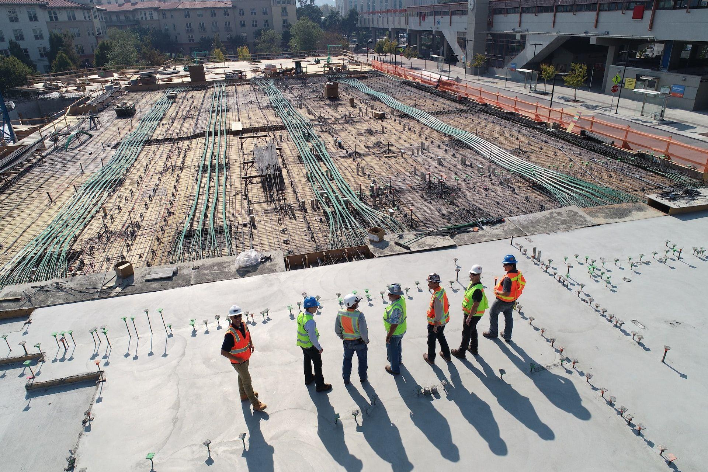

1. Présentation du Pôle Logistique
Situé dans la zone industrielle stratégique de Bouskoura, ce centre logistique répond aux exigences accrues de la chaîne d'approvisionnement et de stockage au Maroc.
Ce projet d'envergure nécessitait la création de vastes halls de stockage sécurisés, de bureaux d'exploitation administratifs, de cours de manœuvre pour semi-remorques et de quais de déchargement niveleurs automatisés.
2. Défis de Construction & Ingénierie
L'intervention de TG2D a porté sur l'exécution intégrale des lots structurants et la gestion rigoureuse des sous-traitants spécialisés :
- Terrassement Massif & Traitement de Plateforme : Compactage lourd et stabilisation des sols avec essais à la plaque pour garantir une portance irréprochable sous circulation de poids lourds.
- Dallage Industriel sans Joint Scié / Quartz : Coulage continu de dalles en béton armé fibré avec traitement de surface anti-poussière haute résistance à l'impact et aux hydrocarbures.
- Gros Œuvre & Fondations Isolées : Réalisation des massifs de fondation pour poteaux de charpente métallique et longrines périphériques.
- Voiries Réseaux Divers (VRD) & Bassins d'Orage : Dimensionnement des réseaux pluviaux et voiries lourdes en enrobé et béton balayé.
3. Galerie de Réalisation


4. Respect des Normes & Sécurité HSE
Sur ce chantier industriel, la sécurité et la santé au travail (HSE) ont fait l'objet d'un suivi quotidien strict : port des EPI, balisage des zones de circulation engins/piétons et contrôle d'accès sécurisé.